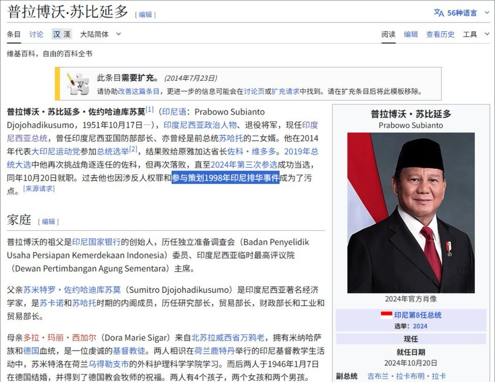
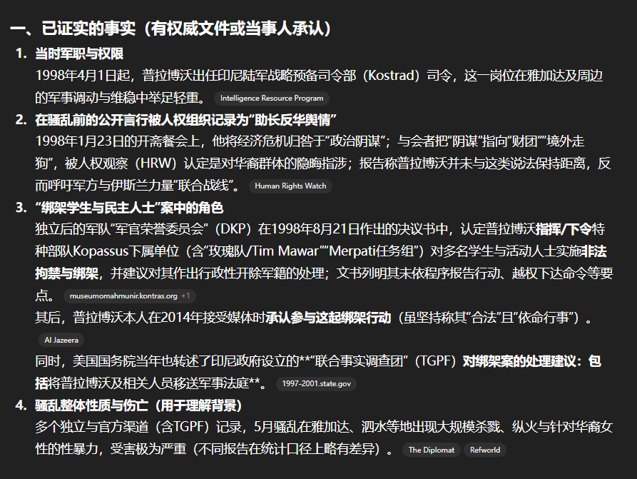
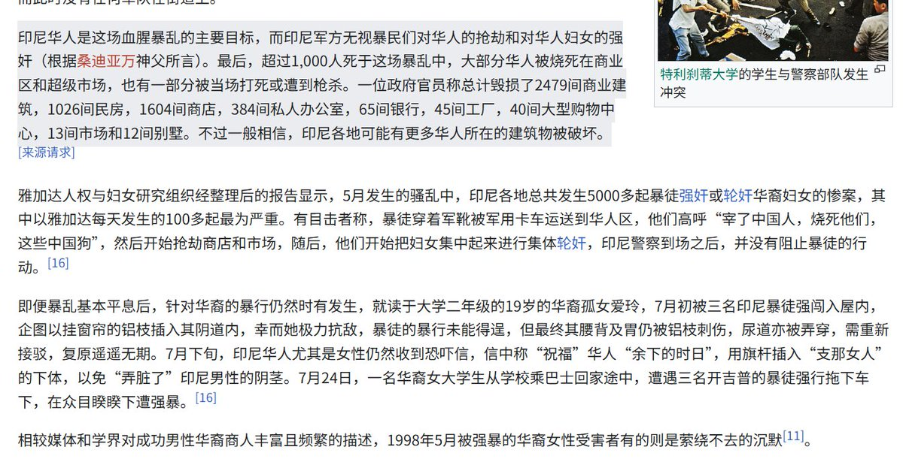

月影独下
@tadatsukiei
@whyyoutouzhele 都说了是世界法西斯同盟大阅兵嘛，群“贤”毕至



李老师不是你老师
@whyyoutouzhele
据公开资料显示
此次被习近平邀请参加9.3阅兵的印度尼西亚总统普拉博沃，曾在1998年参与策划了惨绝人寰的“印尼排华”事件。
在这起事件中，大量华人被屠杀，每天有超过100起针对华人妇女的强奸事件。而时任陆军预备部司令的普拉博沃公开演讲，将仇恨引向华人，并和军方无视了暴民们对华人的所作所为 https://t.co/ESrcl09Wps https://t.co/8HXgf8UVMs